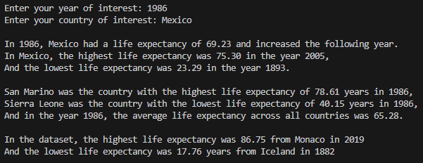

CODING

LIFE EXPECTANCY PROJECT
Analyzing Data From a Spreadsheet
In this program, I used python to analyze the data from a dataset from OurWorldInData.org on the average life-expectancy of certain countries in different years
The program gives information about a country of choice, a year of choice, and information about the entire spreadsheet.

CODE
OUTPUT
WIND CHILL CALCULATOR
Using Functions to Calculate Wind Chill
Using the formula from the U.S. National Weather Service to calculate how cold air feels combined with wind, this program tells calculates it for you.
After inputing a selected temperature, and selecting between the metrics fahrenheit, celsius, miles or kilometers, the program calculates the windchill from varying windspeeds